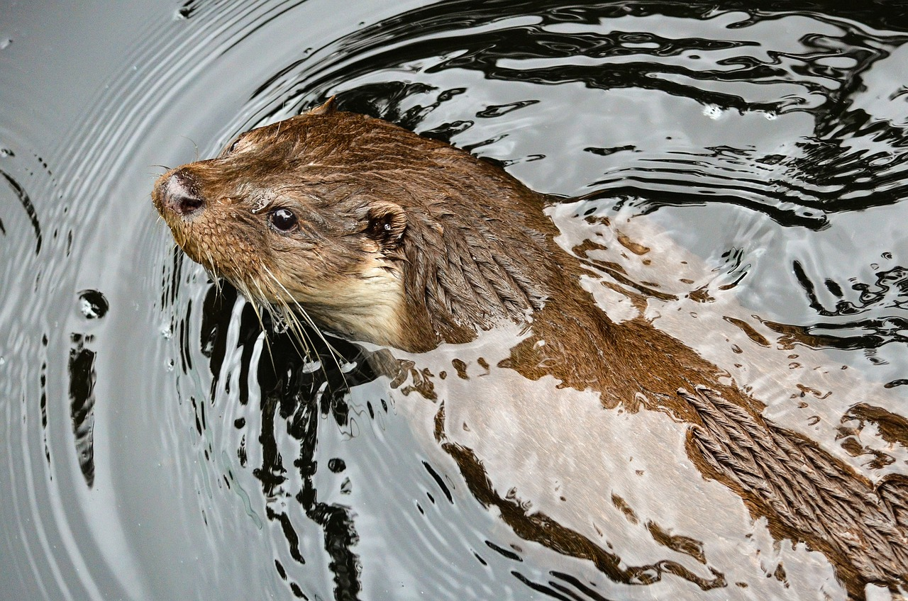

TCientíficos Optimistas: Llegaremos a Marte en un Futuro Próximo!!!
En una entrevista exclusiva con destacados científicos de la Agencia Espacial Internacional (AEI), se ha revelado que existe un consenso creciente dentro de la comunidad científica sobre la posibilidad de llegar a Marte en un futuro cercano...
Leer más 